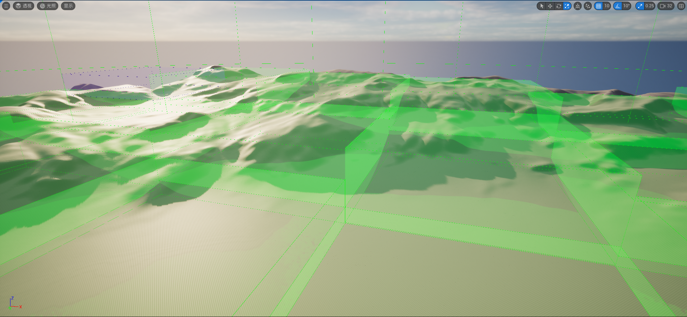

Monde ouvert avec Unreal Engine 5¶
L'auteur a déjà compilé un article de réflexion non technique sur le monde ouvert :
Cet article expliquera plus en détail ce qu'il faut prendre en compte et les défis à relever lors de la création d'un monde ouvert avec UE5.
Partitionnement du monde¶
Pour créer une carte de monde ouvert dans UE5, il faut comprendre clairement les concepts de partitionnement (Partition) et de streaming. Voici du contenu À LIRE IMPÉRATIVEMENT ! À LIRE IMPÉRATIVEMENT ! À LIRE IMPÉRATIVEMENT ! :
- Construire des mondes virtuels dans Unreal Engine | Documentation Unreal Engine 5.3 (unrealengine.com)
- Unreal Fest 2023 - Building Bigger
- [UFSH2023] Mise à niveau du workflow de la création de petites scènes à la construction de grands mondes | Chris Murphy Epic Games
Il existe également des vidéos explicatives accessibles :
- 【UE Terrain】Qu'est-ce que le partitionnement du monde (World Partition) ? Comment l'utiliser ? - bilibili
- UE5 World Partition Part 1 Concepts - YouTube
En bref, UE divise la carte en de nombreuses cellules (Cell) et stream les cellules environnantes au fur et à mesure du déplacement du joueur (source de streaming) :
{kind=link}
Dans l'image ci-dessus, on ne voit qu'un partitionnement en quatre directions, mais en réalité, le partitionnement du monde d'UE utilise un quadtree sparse pour le streaming, avec plusieurs niveaux de grille (Level). Ce que l'on voit n'est que le Level 0 :
{kind=link}
Partitionnement¶
Le partitionnement du monde détermine à quelle cellule (Cell) d'un niveau de grille (Grid Level) un objet appartient en fonction de sa boîte englobante (Bound).
Par exemple, si des objets suivants existent dans le partitionnement du monde, la zone rouge représente l'aire horizontale (Area) de leur boîte englobante (Bound) :
{kind=link}
Lors du partitionnement, le système commence par le niveau de grille le plus bas et place l'objet dans la cellule qui peut justement contenir son aire.
Ainsi, la répartition finale des objets ci-dessus est la suivante :
{kind=link}
Les paramètres liés au partitionnement peuvent être configurés ici :
{kind=link}
Cocher Prévisualiser la grille permet de voir la vue de streaming de la scène dans la vue de l'éditeur :
{kind=link}
Streaming¶
Par défaut, tous les Actor créés dans la scène participent au streaming, c'est-à-dire qu'ils peuvent être déchargés. Des ajustements peuvent être effectués dans le panneau Détails de l'Actor :
{kind=link}
- Grille runtime : À quelle grille de partitionnement du monde appartient cet Actor. Si la valeur est None, il est assigné à MainGrid.
- Chargé spatialement : Si coché, l'Actor participe au streaming du partitionnement du monde. Si décoché, l'Actor reste toujours chargé dans la scène et ne participe pas au streaming.
Le streaming du partitionnement du monde est déclenché par une source de streaming (Streaming Source).
L'interface C++ correspondant à la source de streaming est : IWorldPartitionStreamingSourceProvider
{kind=link}
Le contrôleur de joueur (PlayerController) est une source de streaming par défaut :
{kind=link}
Supposons que le personnage se trouve dans le coin inférieur droit de la carte. En combinant avec la répartition ci-dessus, l'état de chargement global pourrait être le suivant :

On peut également utiliser le composant source de streaming du partitionnement du monde (WorldPartitionStreamingSourceComponent) pour permettre à d'autres Actor d'être des sources de streaming :
{kind=link}
{kind=link}
Vue de débogage¶
Les instructions officielles suivantes permettent de prévisualiser le processus de streaming :
wp.Runtime.ToggleDrawRuntimeHash2D
{kind=link}
-
wp.Runtime.ToggleDrawRuntimeHash3D
-
Après avoir activé la vue de prévisualisation :
-
Utiliser l'instruction
wp.Runtime.ShowRuntimeSpatialHashGridLevel ${LevelIndex}pour ajuster le niveau de prévisualisation. -
Utiliser l'instruction
wp.Runtime.ToggleDrawRuntimeCellsDetailspour voir le temps de chargement des cellules : -
Utiliser l'instruction
wp.Runtime.ShowRuntimeSpatialHashCellStreamingPriority 1pour afficher la carte thermique de la priorité de streaming des cellules :
{kind=link}
{kind=link}
{kind=link}
Configurations clés¶
Multijoueur¶
En mode multijoueur, le serveur n'active pas le streaming par défaut ; le streaming de la scène est un comportement local du joueur :
{kind=link}
L'instruction wp.Runtime.EnableServerStreaming 1 permet d'activer le streaming sur le serveur :
{kind=link}
Optimisation du streaming¶
Le partitionnement du monde active par défaut l'optimisation du streaming, et l'état du streaming n'est pas mis à jour à chaque frame. Les configurations suivantes permettent d'ajuster la stratégie d'optimisation :
wp.Runtime.UpdateStreaming.EnableOptimization true: Valeur par défaut true, active l'optimisation du streaming.wp.Runtime.UpdateStreaming.ForceUpdateFrameCount 0: Valeur par défaut 0, permet de définir le nombre de frames fixes entre chaque mise à jour de l'état du streaming.wp.Runtime.UpdateStreaming.LocationQuantization 400: Valeur par défaut 400, déclenche la mise à jour de l'état du streaming lorsque la distance de déplacement est supérieure à 400.wp.Runtime.UpdateStreaming.RotationQuantization 10: Valeur par défaut 10, déclenche la mise à jour de l'état du streaming lorsque l'angle de rotation est supérieur à 10.
Flux de code¶
Pour les développeurs, comprendre en profondeur le flux du partitionnement du monde est crucial pour la maîtrise globale du projet. Les artistes peuvent sauter cette section.
Voici quelques étapes principales à expliquer.
La structure centrale du partitionnement du monde d'UE est : UWorldPartition
Elle est stockée dans AWorldSettings et peut être obtenue via la méthode suivante :
UWorldPartition* UWorld::GetWorldPartition() const
{
AWorldSettings* WorldSettings = GetWorldSettings(/*bCheckStreamingPersistent*/false, /*bChecked*/false);
return WorldSettings ? WorldSettings->GetWorldPartition() : nullptr;
}
La prise en charge du partitionnement du monde par les Actor se manifeste principalement par la présence d'une fonction virtuelle en mode éditeur dans la classe de base Actor, utilisée pour créer une description de Actor pour le partitionnement du monde :
class AActor: public UObject
#if WITH_EDITOR
virtual TUniquePtr<class FWorldPartitionActorDesc> CreateClassActorDesc() const;
#endif
}
Elle peut être redéfinie par les sous-classes pour remplir une structure comme celle-ci :
class FWorldPartitionActorDesc
{
// Persistant
FGuid Guid;
FTopLevelAssetPath BaseClass;
FTopLevelAssetPath NativeClass;
FName ActorPackage;
FSoftObjectPath ActorPath;
FName ActorLabel;
FVector BoundsLocation;
FVector BoundsExtent;
FName RuntimeGrid;
bool bIsSpatiallyLoaded;
bool bActorIsEditorOnly;
bool bActorIsRuntimeOnly;
bool bActorIsHLODRelevant;
bool bIsUsingDataLayerAsset; // Utilisé pour savoir si le tableau DataLayers représente des chemins d'actifs DataLayers ou les FNames de la version dépréciée des Data Layers
FName HLODLayer;
TArray<FName> DataLayers;
TArray<FGuid> References;
TArray<FName> Tags;
FPropertyPairsMap Properties;
FName FolderPath;
FGuid FolderGuid;
FGuid ParentActor; // Utilisé pour valider les paramètres par rapport au parent (pour avertir des problèmes de compatibilité de couche/placement)
FGuid ContentBundleGuid;
// Transitoire
mutable uint32 SoftRefCount;
mutable uint32 HardRefCount;
UClass* ActorNativeClass;
mutable TWeakObjectPtr<AActor> ActorPtr;
UActorDescContainer* Container;
TArray<FName> DataLayerInstanceNames;
bool bIsForcedNonSpatiallyLoaded;
};
Il existe de nombreuses redéfinitions dans le moteur :
{kind=link}
En mode éditeur, la création d'un nouvel Actor dans une carte avec partitionnement du monde crée automatiquement un FWorldPartitionActorDesc :
{kind=link}
En mode éditeur, toutes les ActorDesc créées sont stockées dans ActorDescContainer de UWorldPartition :
class UWorldPartition final
: public UObject
, public FActorDescContainerCollection
, public IWorldPartitionCookPackageGenerator
{
UPROPERTY(Transient)
TObjectPtr<UActorDescContainer> ActorDescContainer; // Conteneur stockant les ActorDesc, également appelé **MainContainer**
UPROPERTY()
TObjectPtr<UWorldPartitionRuntimeHash> RuntimeHash; // Utilisé pour personnaliser la stratégie de partitionnement des Actor
UPROPERTY(Transient)
TObjectPtr<UWorld> World;
};
Bien que ActorDescContainer soit une variable transitoire et ne participe pas à la sérialisation, il est stocké lors du packaging :
bool UWorldPartition::GatherPackagesToCook(IWorldPartitionCookPackageContext& CookContext)
{
TArray<FString> PackagesToCook;
if (GenerateContainerStreaming(ActorDescContainer, &PackagesToCook))
{
FString PackageName = GetPackage()->GetName();
for (const FString& PackageToCook : PackagesToCook)
{
CookContext.AddLevelStreamingPackageToGenerate(this, PackageName, PackageToCook);
}
return true;
}
return false;
}
Partitionnement¶
La stratégie de partitionnement des Actor de UWorldPartition est implémentée par RuntimeHash. En mode éditeur, RuntimeHash répartit les Actor à chaque démarrage de la carte, et lors du packaging, les données de partitionnement sont également cuites :
bool UWorldPartition::PrepareGeneratorPackageForCook(IWorldPartitionCookPackageContext& CookContext, TArray<UPackage*>& OutModifiedPackages)
{
check(RuntimeHash);
return RuntimeHash->PrepareGeneratorPackageForCook(OutModifiedPackages);
}
bool UWorldPartition::PopulateGeneratorPackageForCook(IWorldPartitionCookPackageContext& CookContext, const TArray<FWorldPartitionCookPackage*>& InPackagesToCook, TArray<UPackage*>& OutModifiedPackages)
{
check(RuntimeHash);
return RuntimeHash->PopulateGeneratorPackageForCook(InPackagesToCook, OutModifiedPackages);
}
bool UWorldPartition::PopulateGeneratedPackageForCook(IWorldPartitionCookPackageContext& CookContext, const FWorldPartitionCookPackage& InPackagesToCook, TArray<UPackage*>& OutModifiedPackages)
{
check(RuntimeHash);
return RuntimeHash->PopulateGeneratedPackageForCook(InPackagesToCook, OutModifiedPackages);
}
UWorldPartitionRuntimeCell* UWorldPartition::GetCellForPackage(const FWorldPartitionCookPackage& PackageToCook) const
{
check(RuntimeHash);
return RuntimeHash->GetCellForPackage(PackageToCook);
}
En mode éditeur, lors du démarrage d'une carte de monde ouvert, la fonction UWorldPartition::OnBeginPlay est appelée :
void UWorldPartition::OnBeginPlay()
{
TArray<FString> OutGeneratedStreamingPackageNames;
GenerateStreaming((bIsPIE || IsRunningGame()) ? &OutGeneratedStreamingPackageNames : nullptr);
// Préparer GeneratedStreamingPackages
check(GeneratedStreamingPackageNames.IsEmpty());
for (const FString& PackageName : OutGeneratedStreamingPackageNames)
{
// Définir comme package mémoire pour éviter de perdre du temps dans UWorldPartition::IsValidPackageName (GenerateStreaming pour PIE s'exécute sur le monde de l'éditeur)
FString Package = FPaths::RemoveDuplicateSlashes(FPackageName::IsMemoryPackage(PackageName) ? PackageName : TEXT("/Memory/") + PackageName);
GeneratedStreamingPackageNames.Add(Package);
}
RuntimeHash->OnBeginPlay();
}
La fonction GenerateStreaming appelle ensuite UWorldPartition::GenerateContainerStreaming, qui recherche récursivement tous les conteneurs et ActorDesc dans le MainContainer.
Certains ActorDesc possèdent leur propre conteneur, comme FLevelInstanceActorDesc par exemple, qui est une instance de niveau placée dans la scène. Sa définition de code principale est la suivante :
class FLevelInstanceActorDesc : public FWorldPartitionActorDesc
{
public:
FLevelInstanceActorDesc();
virtual ~FLevelInstanceActorDesc() override;
virtual bool IsContainerInstance() const override;
virtual bool GetContainerInstance(const UActorDescContainer*& OutLevelContainer,
FTransform& OutLevelTransform,
EContainerClusterMode& OutClusterMode) const override;
protected:
FTransform LevelInstanceTransform;
ELevelInstanceRuntimeBehavior DesiredRuntimeBehavior;
TWeakObjectPtr<UActorDescContainer> LevelInstanceContainer; // Conteneur d'ActorDesc pour l'instance de niveau
private:
void RegisterContainerInstance(UWorld* InWorld);
void UnregisterContainerInstance();
};
Après avoir collecté tous les conteneurs et ActorDesc, la fonction suivante est appelée :
bool UWorldPartitionRuntimeSpatialHash::GenerateStreaming(UWorldPartitionStreamingPolicy* StreamingPolicy,
const IStreamingGenerationContext* StreamingGenerationContext,
TArray<FString>* OutPackagesToGenerate);
Le flux principal de cette fonction est :
- Collecter toutes les configurations de grille de la scène (non seulement WorldSetting contient des configurations de grille, mais aussi certains Actor, comme ASpatialHashRuntimeGridInfo, qui est principalement utilisé pour HLOD actuellement).
- Parcourir tous les ActorDesc et les répartir dans FActorSetInstance de la grille correspondante selon la configuration RuntimeGrid dans ActorDesc.
- Pour chaque FActorSetInstance de grille, appeler :
FSquare2DGridHelper GetPartitionedActors(const FBox& WorldBounds,
const FSpatialHashRuntimeGrid& Grid,
const TArray<const FActorSetInstance*>& ActorSetInstances)
pour répartir tous les Actor de cette grille dans des cellules (Cell) spécifiques.
Streaming¶
La logique de streaming se trouve principalement dans :
{kind=link}
Problèmes clés¶
Le partitionnement du monde (World Partition) permet d'implémenter facilement un grand monde à chargement continu, mais les caractéristiques du streaming entraînent également de nombreuses limitations. Cela nécessite souvent une équipe de développement plus mature, avec une équipe moteur professionnelle, qui tient compte des caractéristiques du partitionnement du monde lors de la conception, et besoin de personnel professionnel pour superviser la stratégie de streaming du partitionnement du monde.
Traversée des frontières¶
Observer la répartition des objets et l'état de streaming précédents :


On peut voir des phénomènes "étranges" :
- Parce que la boîte englobante de l'objet
Ese trouve sur l'axe du partitionnement du monde, il est réparti au Level 3, ce qui signifie qu'il sera toujours chargé, mais l'aire de sa boîte englobante est明明 très petite.
Ce problème se produit très facilement :
{kind=link}
Solutions¶
Le moteur fournit des instructions pour atténuer ce phénomène :
wp.Runtime.RuntimeSpatialHashUseAlignedGridLevels: Activer ou non l'alignement vers le haut des niveaux de grille.wp.Runtime.RuntimeSpatialHashSnapNonAlignedGridLevelsToLowerLevels: Répartir les objets non alignés vers des niveaux de grille inférieurs.wp.Runtime.RuntimeSpatialHashPlaceSmallActorsUsingLocation: Les objets dont la boîte englobante est plus petite que la taille de la cellule sont répartis directement en utilisant leur emplacement (Location).wp.Runtime.RuntimeSpatialHashPlacePartitionActorsUsingLocation: Les objets de partitionnement (végétation, eau et terrain) dont la boîte englobante est plus petite que la taille de la cellule sont répartis directement en utilisant leur emplacement (Location).
Voici une description à ce sujet :
Mais ce n'est pas une très bonne solution. Pour éviter ces problèmes, UE permet à l'équipe de développement de personnaliser RuntimeHashClass selon les besoins de la scène, en le remplaçant ici :
{kind=link}
Référence possible :
Engine\Source\Runtime\Engine\Private\WorldPartition\RuntimeSpatialHash\RuntimeSpatialHashGridHelper.cpp
Dans UE5.3, les configurations ci-dessus sont exposées dans l'éditeur et permettent d'ajuster l'origine des coordonnées du partitionnement du monde, ce qui répond à la plupart des besoins :
{kind=link}
Priorité de chargement¶
En raison du streaming du partitionnement du monde, certains objets en mouvement peuvent se comporter de manière anormale, la gravité étant le cas le plus courant :

Les problèmes dans l'image ci-dessus sont :
- Certains cubes sont répartis dans une cellule, et en raison des limites de l'algorithme de partitionnement, le sol est réparti dans une autre cellule. Si la cellule du sol n'est pas dans la zone de chargement, les objets tomberont directement dans le sol.
D'autres situations peuvent également déclencher ce problème :
- Le streaming du partitionnement du monde se fait par cellule (Cell) et non par Actor. Lorsqu'une cellule est dans la zone de chargement de la source de streaming, tous les Actor de cette cellule sont chargés de manière asynchrone, et l'ordre de chargement n'est pas garanti. Si le cube est chargé avant le sol, et si un tick physique est exécuté pendant ce laps de temps, l'objet tombera également sur le sol. (Ceci est plus probable lorsque la scène est sous forte pression.)
Solutions¶
La principale idée pour résoudre ce problème est :
- Faire en sorte que la grille de partitionnement du monde où se trouvent les objets porteurs de gravité ait une zone de chargement plus grande.
- Déplacer les objets soumis à la gravité vers une grille de partitionnement du monde avec une priorité de chargement inférieure à celle des objets porteurs de gravité.
Persistance des données¶
Les Actor participant au partitionnement du monde n'ont pas de persistance des données. Lorsque nous modifions un objet après son chargement, les données modifiées ne sont pas sauvegardées lors de son déchargement.
Par exemple, dans cet exemple : il y a un groupe de cubes flottants dans le partitionnement du monde. Après chargement, ils tombent vers le sol en raison de la gravité. Après déchargement et rechargement, on constate que les cubes ont correctement conservé leur état précédent et se trouvent sur le sol :

Mais lorsque nous activons l'instruction de console gc.ForceCollectGarbageEveryFrame 1 et regardons à nouveau :

Lors du rechargement des cubes, ils reviennent à leur position initiale.
Le premier exemple nous donne l'illusion que les modifications des objets peuvent être sauvegardées, car les cellules hors de la zone de chargement ne sont pas libérées immédiatement, mais sont dans l'état Unloaded Still Around, ce qui garantit qu'elles peuvent être réutilisées immédiatement lors du prochain chargement. Le véritable moment de déchargement des cellules est lors du prochain GC.
{kind=link}
Solutions¶
Ce problème est causé par les caractéristiques du streaming :
- Lors du streaming entrant, les actifs sont chargés en mémoire ; lors du streaming sortant, les actifs sont déchargés (ressources détruites) et les modifications des actifs ne sont pas sauvegardées.
Faut-il alors sauvegarder les modifications des actifs lors du streaming sortant ?
- Évidemment non, sauf si vous souhaitez effectuer des modifications permanentes, c'est-à-dire que les modifications précédentes sont conservées après la réouverture du jeu et ne peuvent pas être restaurées.
En général, ces modifications ne durent que dans une certaine portée (cycle de vie), par exemple, après avoir redémarré le jeu, réentrée dans le niveau ou réouvert une sauvegarde, ces modifications devraient être perdues.
Mais ce que nous voulons maintenant, c'est que le streaming ne cause pas de perte de données.
En fait, il suffit de :
- Ne pas faire participer ces données au streaming, c'est-à-dire stocker les données dans une portée raisonnable plutôt que dans l'Actor.
UE5.3 propose un plugin expérimental LevelStreamingPersistence qui peut aider les développeurs à résoudre ce problème.
{kind=link}
Ce plugin utilise ULevelStreamingPersistenceSettings pour configurer quelles propriétés du moteur nécessitent de la persistance :
{kind=link}
Lorsque le partitionnement du monde stream une cellule, les propriétés persistantes de la cellule sortante sont sauvegardées selon les configurations ci-dessus, et pour la cellule entrante, les valeurs historiques précédentes sont utilisées pour l'assignation :
Pour résoudre le problème de la gravité ci-dessus, il suffit d'ajouter les configurations suivantes dans DefaultEngine.ini :
[/Script/LevelStreamingPersistence.LevelStreamingPersistenceSettings]
Properties=(Path="/Script/Engine.SceneComponent:RelativeLocation",bIsPublic=False)
Properties=(Path="/Script/Engine.SceneComponent:RelativeRotation",bIsPublic=False)
L'utilisation de PropertyPath pour déterminer quelles propriétés sont concernées peut donner une portée très large. Par exemple, la configuration ci-dessus sérialisera la position et la rotation de tous les composants de scène, mais ce n'est pas le cas pour tous les composants de scène. Le plugin fournit également des délégués pour filtrer davantage quels objets nécessitent la sérialisation :
{kind=link}
Où bIsPublic détermine si la valeur sauvegardée de cette propriété peut être modifiée manuellement, et non seulement sérialisée automatiquement selon le streaming. Les interfaces d'opération se trouvent principalement dans ULevelStreamingPersistenceManager :
class ULevelStreamingPersistenceManager : public UWorldSubsystem
{
GENERATED_BODY()
// Sérialisation
bool SerializeTo(TArray<uint8>& OutPayload);
bool InitializeFrom(const TArray<uint8>& InPayload);
// Définit la valeur de la propriété et crée l'entrée si nécessaire, retourne true en cas de succès.
template <typename ClassType, typename PropertyType>
bool SetPropertyValue(const FString& InObjectPathName, const FName InPropertyName, const PropertyType& InPropertyValue);
// Définit la valeur de la propriété sur les entrées existantes, retourne true en cas de succès.
template <typename PropertyType>
bool TrySetPropertyValue(const FString& InObjectPathName, const FName InPropertyName, const PropertyType& InPropertyValue);
// Obtient la valeur de la propriété si elle est trouvée, retourne true en cas de succès.
template<typename PropertyType>
bool GetPropertyValue(const FString& InObjectPathName, const FName InPropertyName, PropertyType& OutPropertyValue) const;
// Définit la valeur de la propriété convertie depuis la valeur de chaîne fournie sur les entrées existantes, retourne true en cas de succès.
bool TrySetPropertyValueFromString(const FString& InObjectPathName, const FName InPropertyName, const FString& InPropertyValue);
// Obtient la valeur de la propriété et la convertit en chaîne si elle est trouvée, retourne true en cas de succès.
bool GetPropertyValueAsString(const FString& InObjectPathName, const FName InPropertyName, FString& OutPropertyValue);
};
Génération runtime¶
Le partitionnement du monde est effectué en mode éditeur, et tout objet généré (Spawn) à runtime ne participera pas au streaming du partitionnement du monde. Imaginez une telle situation :
- Un petit ballon soumis à la gravité est spawné dans la scène, il tombe sur le sol. Lorsque le personnage s'éloigne de la zone, provoquant le streaming sortant du sol, le ballon tombera dans le sol.
Ce n'est évidemment pas ce que nous voulons. En général, tous les objets permanents de la scène, à l'exception du personnage, devraient être placés dans la carte du niveau dès le départ.
Mais parfois, des besoins spécifiques existent :
- Certains objets de scène peuvent avoir des dépendances d'événements à runtime, et doivent donc être générés (Spawn) à runtime.
Solutions¶
- Si la position de l'objet est fixe, un Actor de remplacement peut être placé à l'avance dans la scène, afin qu'il soit configurable à runtime.
- Si l'objet se trouve dans une certaine zone, un volume de déclenchement (Trigger Volume) peut être placé dans cette zone, et la logique du déclencheur peut être utilisée pour contrôler le cycle de vie de l'objet. Si la taille de la zone de déclenchement dépasse la zone de chargement du partitionnement du monde, le volume de déclenchement doit être placé dans une grille avec une priorité de chargement plus élevée et un composant source de streaming doit être ajouté.
Téléportation du personnage¶
Lors de la téléportation du personnage dans le partitionnement du monde, le streaming nécessite un certain temps. Si le personnage est transféré directement à la position cible, il est probable que les objets周边 n'ayant pas encore été chargés, le personnage tombera directement dans le sol en raison de la gravité.
Solutions¶
Pour résoudre ce problème, nous devons précharger la zone cible et attendre la fin du chargement.
- Solution 1 : Désactiver le tick du personnage, téléporter le personnage au point cible, utiliser le personnage lui-même comme source de streaming pour déclencher le streaming de la zone周边, poller (FTSTicker) jusqu'à ce que la zone cible soit chargée, puis activer le tick. Le framework Mass de Matrix a également une référence correspondante :
{kind=link}
- Solution 2 : Spawner un Actor avec un composant source de streaming à la position cible, activer le streaming, poller jusqu'à ce que le chargement soit terminé, puis téléporter le personnage :
{kind=link}
One File Per Actor¶
OFPA permet aux membres de l'équipe d'éditer共同 différents Actor de la même carte.
Les cartes traditionnelles stockent tous les Actor dans le package d'actifs correspondant à World, tandis que les cartes de monde ouvert d'UE activent par défaut One File Per Actor (OFPA) , c'est-à-dire que chaque Actor correspond à un fichier.
Ces fichiers sont stockés dans le répertoire Content du projet, dans les répertoires __ExternalActors__ et __ExternalObjects__ sous le chemin de la carte correspondante. L'image ci-dessous montre tous les Actor de la carte nommée OpenWorld :
{kind=link}
Le chemin réel du fichier de l'Actor peut être obtenu dans le大纲 de la scène :
{kind=link}
En général, tous les Actor sont stockés dans __ExternalActors__, tandis que __ExternalObjects__ stocke des objets UObject (non Actor), comme divers paramètres (Setting), des groupes de大纲, etc.
HLOD¶
Grâce au streaming du partitionnement du monde, nous pouvons réduire la pression de performance de toute la scène à seulement la zone周边 de la source de streaming :
{kind=link}
Pour la logique du jeu, ce streaming est certes une optimisation, mais pour la scène, nous ne voulons pas que les scènes lointaines soient déchargées en raison du streaming, et HLOD est précisément la solution à ce problème.
HLOD est utilisé pour afficher les paysages lointains dans le partitionnement du monde. Dans les cartes de monde ouvert, son utilisation est différente de celle de HLOD dans les cartes ordinaires (UE4) :
La documentation officielle manque également de descriptions détaillées sur HLOD. Pour les personnes qui ne connaissent pas sa positionnement, il est facile de l'abuser. L'intention initiale d'utiliser HLOD dans le partitionnement du monde est :
- Fusionner tous les Actor d'une cellule de grille en un modèle proxy de basse précision HLOD. Lorsque la cellule dépasse la zone de chargement de la source de streaming, ce modèle proxy peut être utilisé pour l'affichage. Cela réduit la consommation de rendu (en utilisant un modèle et un matériau de basse précision) tout en optimisant le calcul de l'occlusion (en réduisant le nombre d'Actor).
{kind=link}
{kind=link}
Les paramètres par défaut (par défaut) de HLOD pour toute la carte peuvent être définis ici :
{kind=link}
Le panneau de configuration de son actif est le suivant :
{kind=link}
-
Type de couche : Quelle stratégie utiliser pour générer HLOD.
- Instanciation : Utiliser le niveau LOD le plus bas du modèle correspondant (si c'est un modèle Nanite, les nouvelles données Nanite seront générées à partir de ce LOD).
- Fusion : Fusionner les maillages statiques de la partition.
- Simplification : Fusionner les maillages de la partition et effectuer une simplification de maillage sur la base de la fusion. Elle est plus adaptée aux objets à forme géométrique complexe, comme les arbres à feuillage dense.
- Approximation : Fusionner les maillages de la partition et effectuer une approximation de maillage sur la base de la fusion. Elle est plus adaptée aux objets à forme géométrique arrondie, comme les bâtiments et les pierres.
- Personnalisé : Stratégie de génération HLOD personnalisée.
-
Chargé spatialement : Si le HLOD généré doit activer le streaming. Si activé, une grille HLOD sera créée pour cette couche HLOD, et l'Actor HLOD généré sera placé dans cette grille.
- Taille de cellule : Configurer la taille de cellule de la grille HLOD. La valeur doit être un multiple entier de la taille de cellule de la grille Main Grid.
- Zone de chargement : Configurer la zone de chargement de la grille HLOD. La valeur doit être un multiple entier de la taille de cellule de la grille Main Grid.
- Couche parente : Traiter à nouveau le modèle proxy HLOD généré avec la couche HLOD parente pour générer un modèle proxy HLOD plus simplifié, qui a généralement une zone de chargement plus grande.
Points à noter :
- Les objets de scène de Matrix sont principalement des bâtiments aux angles vifs, et ils utilisent une stratégie d'approximation de maillage personnalisée de manière uniforme. Lorsque la scène contient des types d'objets plus complexes (comme des arbres, de l'eau, de la végétation), des stratégies de traitement plus détaillées doivent être personnalisées, ce qui nécessite souvent une stratégie de gestion des actifs très stricte comme support. De plus, comprendre en profondeur le flux de code lié à HLOD et les algorithmes de traitement de maillage fournis par UE est très valable pour l'optimisation des performances des projets de monde ouvert.
- HLOD fusionne les cellules d'une grille en un modèle proxy, mais si une zone contient plusieurs grilles, plusieurs modèles proxy seront générés pour cette zone, et les modèles entre différentes grilles ne seront pas fusionnés. Par conséquent, en général, tous les objets de scène doivent être placés dans MainGrid, et seul les objets de MainGrid doivent générer HLOD. Pour les petits objets, ils peuvent être placés dans une grille avec une zone de chargement plus petite et ne pas participer à la génération HLOD.
Couches de données (Data Layers)¶
Les couches de données sont une fonctionnalité fournie par UE 5 pour le monde ouvert, et leur utilisation est similaire à celle des dossiers de大纲 :
{kind=link}
{kind=link}
Mais contrairement aux dossiers, elle fournit deux fonctions clés :
- Les couches de données peuvent être utilisées pour stratifier les objets de scène par catégorie et diviser en blocs par zone, ce qui peut alléger la pression de chargement de toute la scène dans l'éditeur. Lors de l'édition collaborative, chaque personne peut charger sélectivement la zone qui l'intéresse, ce qui est crucial pour la gestion de scènes de grande taille et la collaboration en équipe. Si cela n'est pas bien géré, cela sera le début du chaos dans le flux de création de la scène.
- La classification en mode éditeur peut fournir une base effective pour l'optimisation de la scène ultérieure.
- Les couches de données sont des sous-niveaux participant au streaming du partitionnement du monde.
Le panneau des couches de données peut être ouvert ici :
{kind=link}
Clic droit pour créer une couche de données pour cette carte :
{kind=link}
Créer ainsi un actif de couche de données utilisable par toutes les cartes :
{kind=link}
Les Actor peuvent être assignés manuellement à une couche de données ici :
{kind=link}
Ou de cette manière :
{kind=link}
On peut également définir le contexte actuel (Current Context) des couches de données, et les nouveaux Actor créés seront automatiquement ajoutés à la couche de données actuelle :
{kind=link}
{kind=link}
Supprimer ou nettoyer la couche de données actuelle de cette manière :
{kind=link}
Instances de niveau (Level Instancing)¶
UE 5 fournit la fonctionnalité d'instanciation de niveau (Level Instancing), visant à améliorer et simplifier l'expérience d'édition du partitionnement du monde.
L'intention initiale des instances de niveau est de regrouper un ensemble d'Actor, de sorte qu'elles puissent être placées et réutilisées dans tout le monde. Mais comme elles peuvent être intégrées dans le partitionnement du monde du niveau principal lors du packaging, et que l'utilisation des couches de données d'UE5 n'est pas encore répandue, de nombreuses équipes de développement habituées à UE4 aiment l'utiliser comme sous-niveau de la carte de monde ouvert.
Dans la version 5.3, le problème précédent qui empêchait de définir la grille runtime pour les Actor dans les instances de niveau a également été résolu :
{kind=link}
Pour les Actor dans les instances de niveau, une option Seulement dans le monde principal a été ajoutée. Si cochée, l'Actor ne sera chargé que lorsque la carte de l'instance de niveau est ouverte, et ne sera pas chargé lorsque l'instance de niveau est chargée par une autre carte :
{kind=link}
Création de scène¶
Voici un article qui liste de nombreux contenus :
Voici quelques suggestions :
-
UE n'est qu'un fournisseur de technologie de moteur ; il fournit de nombreuses capacités techniques excellentes et un éditeur générique, mais il n'existe pas une solution standard de création de scène. Cela nécessite que l'équipe de recherche et développement dépense beaucoup de coûts d'essai-erreur pour accumuler et sélectionner des technologies.
-
Il faut comprendre que la force humaine est limitée. Par conséquent, il est préférable d'adopter la programmation autant que possible lors de la création d'actifs, d'utiliser l'automatisation autant que possible dans la gestion du processus, et de trouver des indicateurs quantitatifs appropriés pour rendre le processus de création traçable et itérable :
- Houdini et le framework PCG d'UE5 :
- [UE5 PCG] Cours officiel : Étude approfondie du projet d'environnement Electric Dreams
- Explication détaillée de la technologie PCG d'Electric Dreams (1) — Introduction aux termes, outils et diagrammes
- Explication détaillée de la technologie PCG d'Electric Dreams (2) — Ravins, grands Assembly
- Explication détaillée de la technologie PCG d'Electric Dreams (3) — Forêts, rochers et arrière-plan de scène
- Explication détaillée de la technologie PCG d'Electric Dreams (4) — Paysages lointains, brouillard, nœuds personnalisés et sous-diagrammes
- Système d'automatisation d'Unreal Engine | Documentation Unreal Engine 5.3 (unrealengine.com)
- Génération procédurale et apprentissage profond | Studio EA
- Houdini et le framework PCG d'UE5 :
-
L'optimisation des performances des scènes de monde ouvert est différente de celle des actifs individuels. Parce qu'il existe un grand nombre d'actifs à maintenir, il est difficile de le faire manuellement. Par conséquent, on devrait chercher autant que possible des stratégies de gestion unifiées au niveau macro, et abandonner certaines exigences d'optimisation mineures pour obtenir un équilibre de performance plus grand. Il est très très très important de bien classer et isoler les actifs de scène, car c'est une base importante pour l'optimisation des performances. L'équipe de recherche et développement peut définir des stratégies de groupe LOD, de groupe Texture et de génération HLOD correspondantes selon différentes classifications. De plus, pour certains actifs qui nécessitent réellement un traitement spécialisé, des bases de spécialisation (listes blanches) doivent également être conservées.
-
Le processus de création de scène ne sera pas chaotique que si chaque participant respecte strictement les normes de création de scène. Par conséquent, l'équipe de recherche et développement doit établir un dépôt de documents publics pour publier et itérer les normes de scène, et faire appel aux outils autant que possible plutôt qu'à des vérifications manuelles. Cela peut réduire considérablement la probabilité d'erreurs dues à l'intervention humaine. Si le travail manuel des personnes concernées doit être augmenté, il faut également évaluer les données et les processus les plus simplifiés possible.
-
Les normes de scène du monde ouvert dépendent fortement de la conception du gameplay. Seule après avoir clarifié le gameplay du personnage principal, l'équipe de développement peut définir les normes de scène correspondantes, établir les indicateurs d'optimisation des performances et créer la chaîne d'outils correspondante. Prenons Tears of the Kingdom comme exemple :
- Selon le mécanisme d'énergie du personnage (nager, escalader, planer), définir les normes de hauteur, de pente du terrain et d'eau.
- Selon les exigences de la compétence de téléportation (Ascend), définir les normes du terrain.
- Selon les caractéristiques de compétences comme Ultrahand, Fuse, Recall, créer des objets interactifs conformes à leurs exigences.
- Les armes (épée à une main, épée à deux mains, lance, bouclier, flèche) peuvent être fusionnées avec d'autres objets, et des caractéristiques sont liées aux emplacements correspondants pour définir les normes des objets de fusion.
- Connaissant les catégories d'états du personnage, créer différents effets de scène, comme des coups de foudre, des incendies, le froid, la chaleur, et fournir des solutions correspondantes (vêtements ou plats).
- Créer le gameplay de la technologie Zonai sans conflit avec les normes de conception du gameplay principal.
Pour ces normes, les développeurs de moteur peuvent effectuer des travaux de développement similaires à ceux-ci :
- Définir des vues de débogage pour
hauteur escaladable du terrain,zone traversable de l'eau,zone utilisable de la téléportation (Ascend)(si UE prend en charge l'extension des vues de débogage sous forme de plugin sans modifier le code source, ce serait très confortable). - Vérifier les indices de performance de divers effets spéciaux et effets de scène, ajuster l'équilibre entre l'effet et les performances, et créer des outils de gestion et de validation correspondants.
-
Concernant les outils de l'éditeur, voici quelques petites suggestions :
- Retracer autant que possible l'origine du problème et le résoudre à la source, car le coût de résolution du problème à la source est le plus bas. Par exemple, lors de la création de l'actif (AssetCreated), lors de la sauvegarde de l'actif (AssetSaved), lors de la création de l'Actor (NewActorsPlaced)...
- Utiliser des notifications (Notification) ignorables plutôt que des boîtes de dialogue (Dialog) bloquant l'entrée utilisateur.
Conception du gameplay¶
Concernant la conception de niveaux du monde ouvert, voici quelques documents :
- Quels sont les défis de la création d'un jeu de monde ouvert ? - Studio TiMi / Jiang Anxi
- De zéro à un jeu de monde ouvert - Game Grape / wenlon
- Réflexions sur le développement de jeux - Monde ouvert - Zhihu / Italink
- Réflexions sur le métavers - Zhihu
La conception du gameplay de base du monde ouvert est très importante ; elle doit être complète et pleine de ruses. Ajouter un module irrationnel pour atteindre un certain effet ne fera que causer un coup de grâce aux travaux de développement ultérieurs.
- Après avoir clarifié les limites des divers budgets (temps, énergie, argent, puissance de calcul), définir la planification de la allocation des ressources ; le choix est inévitable.
- Si la conception du gameplay de base n'est pas rigoureuse, l'ensemble du processus de création deviendra chaotique ou incontrôlable. Avec l'accumulation du gameplay, la difficulté de création de la scène augmentera de manière exponentielle. Si des conceptions astucieuses ne sont pas adoptées pour faire converger le contenu du gameplay, le coût de création risquera facilement de monter en flèche.
Donnons deux exemples :
-
Dans Zelda, le système de gameplay de base est utilisé pour ériger l'ensemble du système de gameplay du jeu, et diverses extensions de gameplay sont réalisées en appliquant différents modèles. Les développeurs garantissent que les modèles et la conception systématique sont dans une plage contrôlable, et les artistes et créateurs de jeux dérivent le contenu du jeu dans cette plage limitée, ce qui fait que la complexité du projet n'augmente pas急剧 avec la taille.
-
Dans Black Myth: Wukong, Wukong peut se transformer en divers monstres élites grâce au pouvoir de 72 transformations. Cette conception de gameplay permet à l'équipe de recherche et développement de consacrer plus de coûts de création à la conception des monstres élites.